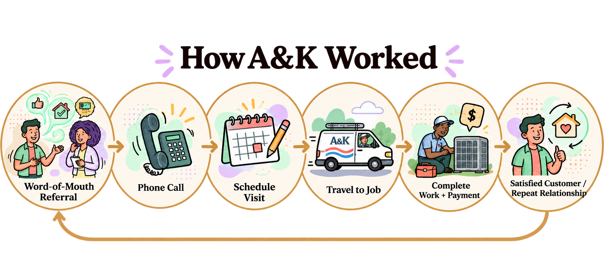

Told through my late father's HVAC business, A&K Heating and Air, circa 2004–2019.

This case study is based on A&K Heating and Air as I knew it while my father was alive; Kenny still runs the business today.
My father, Anderson, built A&K Heating and Air after a workplace injury sidelined him from his previous job for the better part of a year. The door back to that job stayed open once he healed — but with my mother's encouragement, he went out on his own instead. He started it with his partner, Kenny, and the name is both of theirs: A and K. It was a two-person team.
I was his oldest kid, and the nosiest: I rode along on service calls, asked more questions than a kid probably should, and grew up watching how he actually ran things. What I saw was a business that flourished because my father built a strong reputation of trust. No ads. No lead-chasing. Just word-of-mouth referrals, and a reputation he protected like it was the only asset that mattered.
Day to day, it ran on pen and paper. Customers reached him by phone or email, and he handed out business cards when the opportunity arose. Much of what mattered, like customer addresses, the quirks of a specific property, and plenty more, lived only in Anderson's head, and the business operated smoothly.
Not every business owner wants to grow into something bigger. Many are content operating at their current size. Anderson wasn't trying to add trucks, employees, or the overhead that comes with running a larger company. He had, by most measures, exactly the business he wanted. So why consider Salesforce at all?
The business worked, but Anderson had his gripes: reshuffling the whole day's schedule in the middle of a site visit, and paperwork that ate up time he'd rather spend on HVAC work. Easing those could improve his life as a business owner and a technician. Below are 11 scenarios I've identified where the work gets inefficient or hard. The list isn't exhaustive, but it covers the flow of a typical case from first call to final paperwork.
I've identified a few specific situations where moving from pen and paper to a digital system could have enabled more flexibility to respond when the day doesn't go as planned, and generally relieved much of the administrative burden on this non-technical, two-person team.
Make installed equipment searchable.
"A model is recalled or phased out and Anderson needs to know which customers received it. Instead of searching notebooks, relying on memory, or, worst, waiting for a customer to call about the issue first."
Recognize equipment is missing before leaving for the job.
"Despite careful planning, something slips through the cracks and Anderson arrives on-site without a part or tool he expected to have. Now he has to leave, get what he needs, return, and absorb the delay across the rest of the day."
Know what is actually in stock before planning tomorrow's work.
"At the end of the day, Anderson plans tomorrow's jobs from memory and assumes a commonly used part is available in their storage. Only later does he realize it is gone, which means an unexpected supply run before the first appointment or another schedule change."
Keep track of work that's "waiting on a part."
"Three customers receive temporary fixes while A&K waits for a back-ordered part. Anderson needs to both remember who is waiting and coordinate with each customer when the part arrives in 1-2 weeks, all while new jobs continue to come in."
Reduce dependence on memory as customer history accumulates.
"A repeat customer calls. Anderson recognizes the name and voice, but after years of customer after customer, the exact details of their last conversation and installation are harder to retrieve immediately. He knows the relationship; the problem is carrying every detail of that relationship in his head."
Help customers know who is coming to their home before the technician arrives.
"Anderson's daughter is a new homeowner. Before an electrician arrives, she receives an automated message with the technician's photo, so she knows exactly who to expect at the door. That small detail makes the visit feel safer and less stressful, the kind of customer experience she would have wanted A&K to provide too."
Resolve simple issues without an unnecessary service visit.
"A customer calls with an issue Anderson is fairly sure he could solve over the phone, but they cannot describe what they are seeing clearly enough for him to confirm it. He drives out anyway and discovers it really was a simple fix. A short video, visual guide, or better way to see what the customer sees could have saved Anderson the trip and the customer a service-call fee, while still letting him help."
Make job details only Anderson knows transferable to his business partner, Kenny.
"Anderson knows exactly how to reach a longtime customer's home but does not remember the street address. Kenny needs to take the job today, so Anderson has to reconstruct information that normally lives in his own memory before someone else can step in."
Reduce the ripple effect when the day changes.
"Anderson is halfway through a job when a tool fails or he realizes he has the wrong part. The delay doesn't end with that customer: now every appointment after it is at risk. He has to solve the immediate problem, call the rest of the day's customers, explain that he is running late, and possibly renegotiate or reschedule work that no longer fits their availability."
Capture information when the environment makes physical note-taking difficult.
"Anderson is in a crawl space inspecting the system. His hands are occupied and dirty, space and lighting are limited, and he notices details he will need later. Stopping to write is unrealistic; relying on memory means carrying those observations until he can safely record them."
Reduce repetitive administrative effort after the field work is done.
"After the jobs are complete, payment details, job notes, receipts, and other business records still have to be organized into something usable. Every extra back-office step competes with time Anderson could spend on necessary HVAC work, rest, or family."
Pricing above is approximate — pulled from Salesforce's published list pricing and subject to change with actual configuration and negotiated terms. Salesforce sells some of the AI features as Einstein for Field Service and others as Agentforce for Field Service, and its help documentation says the Einstein ones don't need an Agentforce subscription, so which add-on a feature needs can change the price.
Showing everything would have you sitting here forever, so this follows a single workflow instead: a repeat customer calls, Anderson pulls up their record, logs the job, requests the part he's missing, and the follow-up doesn't get lost while he waits.
A ~2:43 video demonstrating a complete workflow in Salesforce Field Service.
These findings come from building the demo above in about three weeks, in a free Developer Edition org. I couldn't configure everything for the phone, so I worked mostly on desktop. Salesforce sells Field Service Mobile as the technician's tool, and a full setup could make Anderson's day-to-day work mostly mobile. I also assume my father wouldn't configure Salesforce himself: he'd pay someone to set it up around how he works, then check back when Salesforce adds features, he finds a new use case, or something breaks.
A retrospective can't produce a real ROI figure or say whether Anderson would have adopted Salesforce. What's more, A&K was already a successful business, so success here isn't necessarily more leads or more growth. Salesforce would have to improve the business Anderson already wanted to run, and a lot of that improvement isn't money. What I can recommend is how to evaluate it: a baseline week observing the current process without changing it, then a pilot week with the stripped-down setup, measuring the same things both times. The question becomes whether Salesforce removed more work than it added. Here's what I'd look for, and how I'd measure it:
None of these has a price tag. Only the owner can say what they're worth to him.
The same platform gets easier to justify as the operating model grows: more technicians, more vans, more inventory, more dispatch and service history to manage. For a one-to-two person company today, that calculation is tighter. There aren't many moving parts at that size; the weight is mostly administrative. So Salesforce would only be worth it if it took a real share of that work off the owner, so the owner and technicians can spend their attention on the rest of the business.
A&K isn't the only business like this. I can't put a number on it, but I see them all around me: small, local, referral-driven property service companies that are easy to overlook. Many aren't looking to grow, and their owners range from comfortable on a laptop to not at all. What this case study worked through can extend to many of them: the scenarios, the questions, and how to measure the result. What to capture, and how, is still each owner's call.
Whether the cost of Salesforce is worth the value isn't something this case study can answer for Anderson, or for companies like his. Some of what it changes can be measured, and some of it can't. What it can do is give an owner the option to run his business with less to remember, protect the quality and reputation he's built, and get his time back, taking on more work only if he wants to. Growth isn't assumed to be the goal. The overall call is a personal one, about how he wanted to spend his days, not a formula. The honest version of this case study leaves that decision with him, and with every owner-operator weighing the same tradeoff for themselves.
Ecclesia Morain · HVAC modernization case study · September 2026